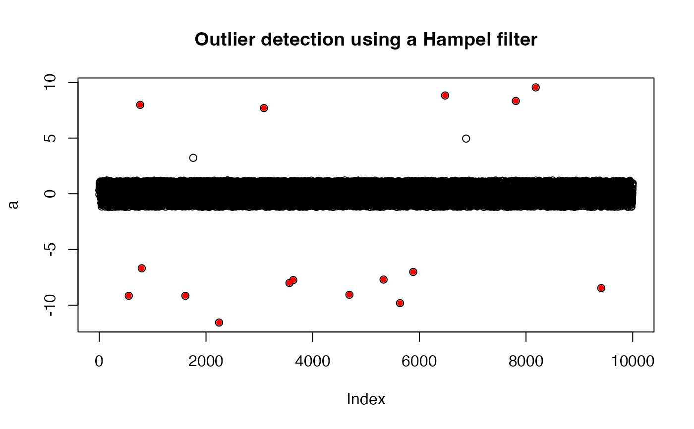

A wrapper for the roll_hampel() function that counts
outliers using either a user specified threshold value or a threshold value
based on the statistics of the incoming data.
findOutliers(
x,
width = 25,
thresholdMin = 7,
selectivity = NA,
fixedThreshold = TRUE
)Numeric vector.
Integer width of the rolling window.
Numeric threshold for outlier detection
Value between [0-1] used in determining outliers, or
NA if fixedThreshold=TRUE.
Logical specifying whether outlier detection uses
selectivity (see Details).
A vector of indices associated with outliers in the incoming data x.
The thresholdMin level is similar to a sigma value for normally
distributed data. Hampel filter values above 6 indicate a data value that is
extremely unlikely to be part of a normal distribution (~ 1/500 million) and
therefore very likely to be an outlier. By choosing a relatively large value
for thresholdMin we make it less likely that we will generate false
positives. False positives can include high frequency environmental noise.
With the default setting of fixedThreshold = TRUE any value above the
threshold is considered an outlier and the selectivity is ignored.
The selectivity is a value between 0 and 1 and is used to generate an
appropriate threshold for outlier detection based on the statistics of the
incoming data. A lower value for selectivity will result in more
outliers while a value closer to 1.0 will result in fewer. If
fixedThreshold=TRUE, selectivity may have a value of NA.
When the user specifies fixedThreshold=FALSE, the thresholdMin
and selectivity parameters work like squelch and volume on a CB radio:
thresholdMin sets a noise threshold below which you don't want anything
returned while selectivity adjusts the number of points defined as
outliers by setting a new threshold defined by the maximum value of
roll_hampel multiplied by selectivity.
width, the window width, is a parameter that is passed to
roll_hampel().
This function is copied from the seismicRoll package.
# Noisy sinusoid with outliers
a <- jitter(sin(0.1*seq(1e4)),amount=0.2)
indices <- sample(seq(1e4),20)
a[indices] <- a[indices]*10
# Outlier detection should identify many of these altered indices
sort(indices)
#> [1] 552 766 795 1613 1761 2167 2245 2794 3086 3565 3636 4689 5329 5638 5885
#> [16] 6483 6877 7809 8182 9411
o_indices <- findOutliers(a)
o_indices
#> [1] 552 766 795 1613 2245 3086 3565 3636 4689 5329 5638 5885 6483 7809 8182
#> [16] 9411
plot(a)
points(o_indices, a[o_indices], pch = 16, cex = 0.8, col = 'red')
title("Outlier detection using a Hampel filter")
